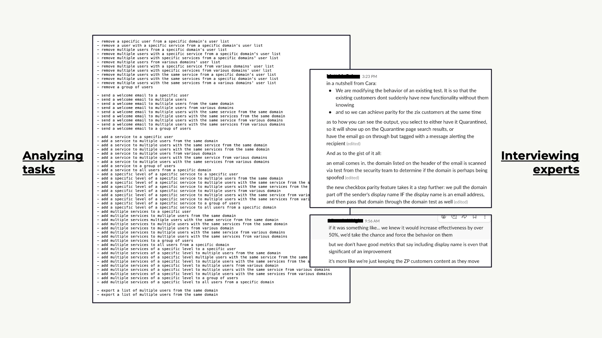
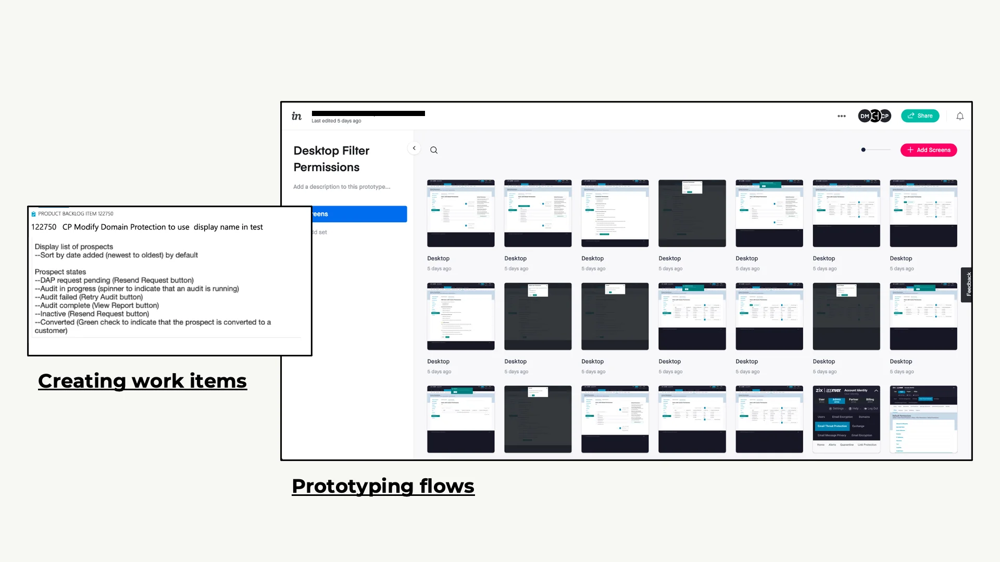
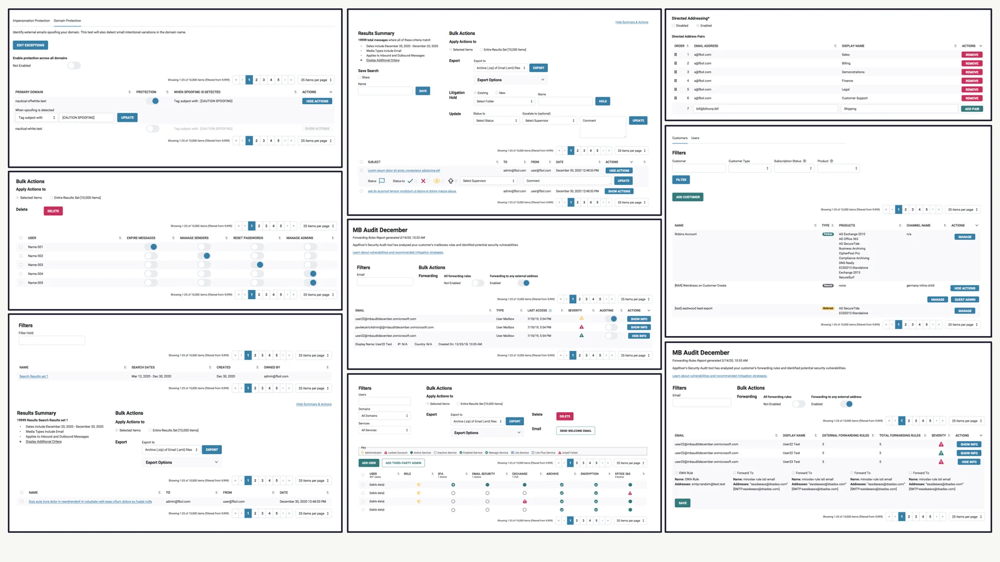

- Feature Development
- B2B
- Responsive Web
Zix
Zix is an enterprise solution for email encryption, threat protection and email archiving.
The company was overhauling their infrastructure to build a cloud-based PaaS. They had over 21 apps they wanted to unify and improve.
Contributions
UX Design, Design System, Front-end, Strategy, Visual Design
Team
UX Director, UX Designer, Engineering, Product Management, Me
Timeline
2019-2020
Research
My design improvements were driven by data, using user feedback and insights to refine and validate solutions.
One of the key exercises I rely on is the Top Tasks analysis. This practice has been instrumental in identifying the most critical functions within the software, allowing me to map out clear user journeys and validate task completion. Through this research, I uncovered recurring tasks that spanned across different sections of the software, revealing areas for simplification. Furthermore, I realized that while the focus had been on growth, sustainability in design was often overlooked, highlighting the need for a more balanced approach moving forward.
As part of my research I also conducted an extensive audit of design patterns across the software.
What you're seeing is an audit of the table pattern. With this software being primarily designed by engineers the table pattern was the dominant interaction pattern. This gives you a broad view of the various ways the different tables look and behave in context. Note the visual and structural disimilarities.
Process
Work was structured in Agile fashion. Prototypes were built from requirements then tested and refined until releasable.
Mockups and prototypes were the expected deliverables. The UX team was smart and instead of providing files upon files and versions of versions we had an Abstract + Sketch setup that we'd link to. This meant devs were always accessing the latest version and there were less files to manage, we had better security and version control.
Results
This is a small part of the unifying work done for tables. This is in direct response to the audit previously shown. There were many other table uses and variations not shown.
Consider the parable of the before state. Is it clear? Is it communicative? Is it approachable? Contrast it with the parable of the after state. Any confusion is gone and a new kind of clarity is achieved.
Extra benefits are boosts in accessibility with the larger and more simple interactions and a wider spacing for readability.
Liberal use of a gridded structure cleans up the interface, providing small pages than easily accommodate dense information. Exactly the type of pages you want in an e-mail security SaaS.
Usability touches like success messages and clear undo actions create a flow-based experience keeping the user moving along their task and maintaining control at all times.
Dashboards are minimal, presenting only the information relevant to the task at hand, and always presenting that information in a clear, unabimiguous way.
Impact
+40k
users added
+21%
increase in ARR
At first [this software] was annoying to use, but in recent years they've made it much easier to deal with.
Customer Review
Other projects of note
Are you ready to give your customers the product experience they deserve? https://forms.gle/cHUEEu3JhBvc7hF57
- I can help
Contact